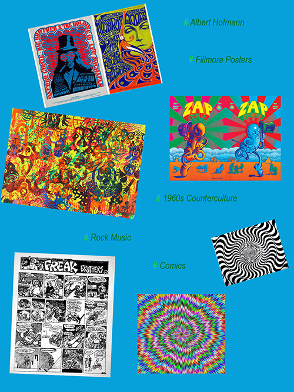

Behind the design
I. MOODBOARD
II. COLOURS
- color scheme 1
- color scheme 2
- color scheme 3
III. TYPOGRAPHY
Love solid’ font - Based on the Viennese Secession poster lettering of the 1900s by Alfred Roller, which was rediscovered in the 1960s and widely used in hand-lettered psychedelic posters. The letters in the upper-case character positions have curly inside strokes, whereas those in the lower-case positions have straight inside strokes.
‘Hippie Movement’ font associates with 1960’s counterculture. This cultural phenomenon helped the psychedelic style became the most popular art movement in that time. The letters are bold and they have different x-height lines.
‘Rockwell’ font is a ‘geometric’ slab serif typeface with a monoline construction with all strokes appearing to be roughly the same width and its capital 'O' roughly circular. I chose this font because it looks very nice with the font number 1 and also they create a typical psychedelic atmosphere – rock and 1960’s.
IV. LOGO
Logo shape development :
The idea of creating this logo was quite complicated. I wanted to find something what will be associated with the psychedelic style. There are a lot of things, but I had to focus only on one issue. I decided to choose the ‘LSD’, without it the psychedelic style would have never developed. I tried out writing the name of drug using different fonts. According to me, the best font turned out to be ‘Love solid’. The letters are bold and uppercase. These three letters are clear and legible. They create an expressive mark.
V. Image assets
VI. Visualisation of folder structure
- small size
- medium size
- large size